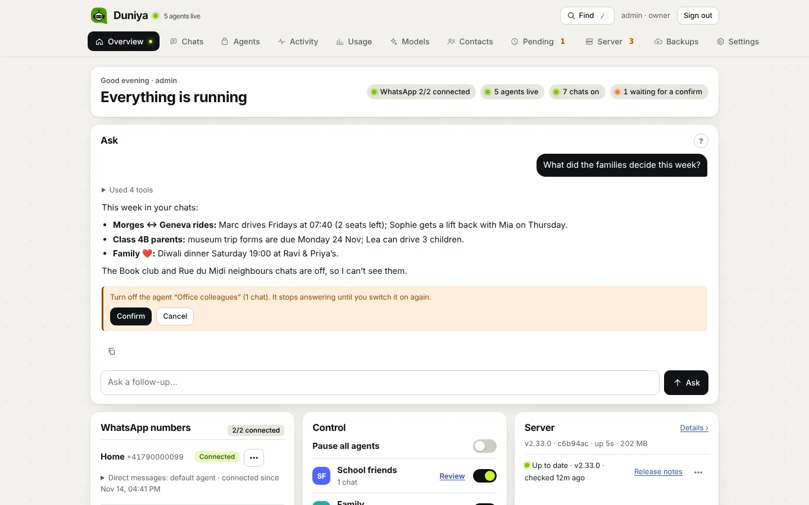
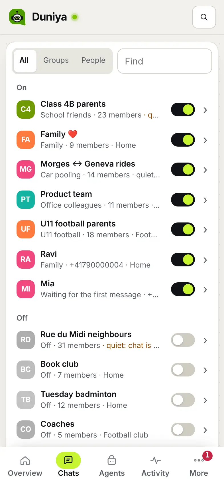
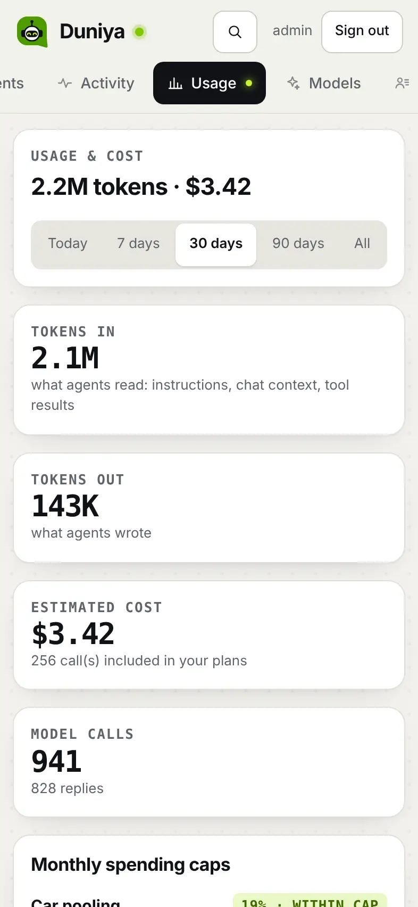

Duniya runs AI agents for your family, school, car-pool or club chats. You pick which chats they may join, which model they use and which tools they get — all from a calm web panel, on a free cloud server you own.
Self-hostedRuns on a 1 GB VMNo commercial WhatsApp API
https://duniya.example.org/#overview

M
Morges ↔ Geneva rides14 members
Luca@Car pooling who drives tomorrow?
Car poolingThu 20 Nov: Luca 07:15 from Morges (full), Mia back from Cornavin at 18:10 — 1 seat left.
MiaSophie, see you at 18:10 👍
Memory~180 MBRAM for the whole app
Server cost0 €on Oracle Cloud Always Free
Model providers6+Claude, ChatGPT, Copilot, OpenRouter…
DefaultSilentuntil you switch a chat on
How it works
From zero to a helpful group in four steps.
No terminal needed after the install. Everything below happens in the web panel, on a phone or a laptop — and a first-run checklist on Overview always shows the next step.
Install
One click on Oracle Cloud or Google Cloud free tiers, or one command on any Ubuntu/Debian server. You get a web address and a one-time setup code.
Link a number
Scan the QR code with a spare WhatsApp number (Linked devices) or type a pairing code. Add more numbers any time.
Create an agent
Start from a template — School friends, Family, Car pooling, Office, Neighbours — or describe it and let the AI helper draft it.
Switch a chat on
Every chat is off until you turn it on and pick its agent. Then people write !ride or @mention it.
A 15-second tour of the panelDemo data · numbers like +41 79 000 00 01 are fake
Features
Everything an organiser needs. Nothing they have to SSH for.
Agents & templates
One server, many agents — each with its own job.
An agent is a set of plain-language instructions plus triggers, organizers, tools, a model and scheduled posts. Start from a template and adjust, export it as a file, or import one.
Templates: School friends, Family, Car pooling, Office colleagues, Event planning, Neighbours
Group memory: follows the conversation, keeps a running summary and notes
People & roles: pick organizers from the group's member list (admins pre-selected)
Scheduled posts, e.g. “today's rides” every weekday at 06:45
A test console that uses the real tools without posting to WhatsApp
Silent by default
Agents only speak where you switched them on.
Every group and every person starts off. Messages from an off chat are dropped before they are stored and before any model sees them — the panel only counts how many were ignored.
One switch per chat, with the agent, model and log level next to it
Groups and 1:1 chats on every number, filterable
Per-chat token and cost totals, plus “Messages & memory” for admins
A privacy notice is posted once when a group is switched on (your text; per-group opt-out)
Private to members hides a chat from the owner assistant
Numbers & direct chats
Several WhatsApp numbers. Groups and one-to-one.
Link a home number and a club number side by side; each shows its own live state. Assign an agent to a person so it always answers them, or choose which agent picks up direct messages to each number.
QR code or pairing code; reconnect and unlink from the panel
Replies always leave from the number the chat belongs to
Uses WhatsApp's normal linked-device protocol — no paid connector
Bring the model you already pay for — or a free one. With a backup.
Guided steps with links to exactly where a key is made. Auto picks a connected model for you; or choose per agent and even per chat.
Sign in with ChatGPTGitHub CopilotOpenRouter · free modelsAnthropic APIOpenAI APIOllama / any OpenAI-compatible
ChatGPT Plus/Pro plan usage via OpenAI's official sign-in flow
Copilot allowance via the official Copilot SDK (downloaded only if you connect it)
OpenRouter in one tap with a “Free models only” switch
Automatic fallback: on a usage limit, outage, timeout or expired sign-in the agent answers with the next model; the failing account pauses and you get a WhatsApp alert
Several accounts per provider, with labels, used in order or spread
Connect any MCP server: Sign in with OAuth, your own OAuth app, a token or custom headers — or install a local one from npm or GitHub (owner only). Add it to one agent, or once for all agents (each can opt out). Tick which tools participants and organizers may use.
Allow lists enforced in code, not in the prompt
Changes go through a confirm step: an organizer replies confirm CODE
Local services run with a scrubbed environment — never the app's secrets
Write what you want in your own words — “a helper for our running club that posts Sunday's run every Saturday” — and get a full proposal with a before/after for every field. Works for changes too: “shorter replies”, “make Ravi an organizer”.
Changes come back as a friendly visual diff — only what changes, side by side, or the whole new text. Nothing is saved until you click apply.
Manage from ChatGPT or Claude
The app is an MCP server too.
Connect Duniya to ChatGPT or Claude and run it by chatting: “which agents are on?”, “turn off the carpool agent”, “what happened in the school group today?”. The assistant acts as you, with your panel role.
OAuth 2.1 with PKCE and a consent page you approve
Risky actions return a preview and need a second confirmation
Every call is in the activity log; disconnect any time
Ask about all your chats — from WhatsApp or the panel.
Link your own phone once (link CODE), then message any agent number privately: “what did the families decide this week?”, “why is the carpool group quiet?”, “turn off the helper agent”. The same assistant answers in the Ask box on Overview and in the mobile app.
Answers linked panel users only, never in groups, with your panel role
Sees chats that are on — not those marked Private to members
Every change needs confirm CODE or Confirm; every question is in Activity
Start with an agent's trigger (!family …) to talk to that agent instead
Agents look at photos, listen to voice notes and talk back.
When a connected provider can do it, agents see photos and PDFs, transcribe voice notes, create pictures and reply with voice notes. The Models page shows plainly what each provider can do and how to enable the rest.
OpenAI API key and OpenRouter (paid models) cover all four; Claude sees photos
Sign in with ChatGPT and Copilot: photos in, no transcription, pictures or speech — OpenAI doesn't offer those for plan sign-in, so Duniya doesn't use the plan for them
Optional on-server speech (Whisper tiny + Piper) on servers with 2 GB or more
Counted in Usage and spending caps; switched per agent
More than text: pictures, polls, reactions, groups.
Agents can send images, documents, voice notes, locations and contact cards, react with emoji, run polls and read the votes, and — for organizers — manage the group itself. You choose each action per role.
23 actions, from send media to group name, picture and invite link
Powerful actions are organizer-only and recorded in Activity
It uses the real tools and saved settings; nothing is posted to WhatsApp.
Test as
See what each person would get.
Test as a participant or an organizer, in one of the agent's chats or a new direct chat — with the tools that role really gets, and a note when that chat is off.
Tokens and estimated cost by agent, chat, provider, account and model — next to each of them and in one report. Plan-based providers show as “included”; prices are never guessed.
Monthly caps per agent and per chat, in dollars or tokens. One WhatsApp alert at 80%; at 100% the agent stays quiet or switches to a cheaper model. A weekly summary on WhatsApp: messages, replies and cost per agent, ignored chats, waiting changes — counts only, never contents.
To this server, a private GitHub repo the app creates for you, or any S3-compatible bucket. Download a backup and restore it on a fresh server's welcome screen.
A running summary and notes per chat; admins can read and search what was stored (each look is logged) and erase it. Organizers are picked from the group's members.
Automatic HTTPS whether the domain points straight here or through any CDN. Switching is two-step and never cuts you off; stricter access rules are a trial that rolls back by itself. Or open no ports at all: Cloudflare Tunnel, Tailscale or your own tunnel.
Detects the server's size. On small servers photos and voice notes wait in a queue (nobody has to resend), heavy add-ons stay off, and optional work pauses under memory pressure — replies keep flowing.
When a group is switched on, the number says once that messages are stored for context. Your text; per-group opt-out; one line in a person's first direct reply.
Names from the linked phone plus your own list with notes. Agents look people up; participants only see contacts you mark Shared.
Locked down
Sign-in and recovery.
Google-only sign-in with invites, an IP allow-list (e.g. only your CDN), shared memory written by organizers only, and a duniya command line for recovery.
Works on a phone
Run it between two errands.
The panel is built for an iPad or a phone first: big touch targets, one clear status per thing, light and dark mode. A native iOS and Android app is in preview too — open it in Expo Go and scan the QR code under Settings → Mobile app.
Overview

Chats
Agents

Usage
Install
Your own server in about ten minutes.
Use a dedicated WhatsApp number (a cheap prepaid SIM is fine). The installer prints the panel address and a one-time setup code for your owner account.
Option A · one click
Oracle Cloud Always Free
Creates a free VM that installs itself, with HTTPS at https://<ip>.sslip.io — no domain needed.
Oracle Cloud: when the job says Succeeded, reload the page, then Application information (or Outputs): Watch the install and Open the panel, with copy buttons for the address and IP. Also at the end of the job Logs (panel_url = "https://…") or under Compute → Instances → Public IP address.
Google Cloud: the end of the Cloud Shell output, or Compute Engine → VM instances → External IP.
Own server: the installer's last lines; later sudo duniya status. Docker:http://localhost:8080.
Open http://<server-ip>/: a live progress page that opens your panel at https://<ip-with-dashes>.sslip.io by itself.
App updates are one click in the panel (Overview → Server → Updates) and keep everything. For the rest (updating the Oracle stack, recreating a server and restoring a backup, removing it without leftovers, finding the IP, logs and serial console) there is a step-by-step guide per host with the exact console menus. The panel's Server page links to the one for your server.
Your server, your data. SQLite on your VM; secrets and backups encrypted.
Silent by default. Off chats never reach storage or a model; groups get a privacy notice.
Roles everywhere. Owner, admin, viewer in the panel; organizer and participant in chats.
Confirm before change. Tool changes wait for confirm CODE.
Is this the official WhatsApp Business API?
No. Duniya links to a normal WhatsApp number as a linked device (like WhatsApp Web), using the open-source Baileys library. That keeps it free and simple, but unofficial clients can be banned — so use a dedicated number. Agents only reply when addressed and are rate-limited to keep the risk low.
What does it cost?
The software is free. The server can be free on Oracle Cloud's Always Free tier. Models: use OpenRouter's free models, your ChatGPT Plus/Pro plan or Copilot allowance, or pay per use with an API key. The Usage tab shows tokens and cost, and monthly spending caps stop surprises.
Can I use my Claude Pro/Max subscription?
No — Anthropic's terms don't allow third-party apps to use Claude subscriptions, so Claude needs an API key. ChatGPT plans work through OpenAI's official open-source sign-in flow.
Who can see the messages?
Only chats you switched on are stored, and only for memory (a running summary, notes and recent messages, with retention limits). Admins and owners can read what was stored for a chat; every look is written to the activity log. Erase a chat's memory with one click. Tell your groups that the assistant keeps context.
Will people in the group know there is an assistant?
Yes, by default. When you switch a group on, the number posts a short privacy notice once (your text, per-group opt-out), and a person's first direct reply gets one line. Agents only answer when addressed.
What can't Sign in with ChatGPT do?
It answers with text and sees photos. OpenAI doesn't offer transcription, image generation or speech for ChatGPT plan sign-in, so for voice notes, pictures and voice replies connect an OpenAI API key or OpenRouter (paid models). The Models page shows this per provider.
Do I need to know Linux?
Only for the one install command — or not at all with the Oracle Cloud button. After that, updates, OS packages, logs, restarts and backups are buttons in the panel.
Can several people manage it?
Yes. Invite people by email to sign in with Google, or add password users, as owner, admin or viewer. You can also manage the app from ChatGPT or Claude, with the same role rules.
How do I report a security issue?
Privately, through GitHub's “Report a vulnerability” on the repository — see SECURITY.md.